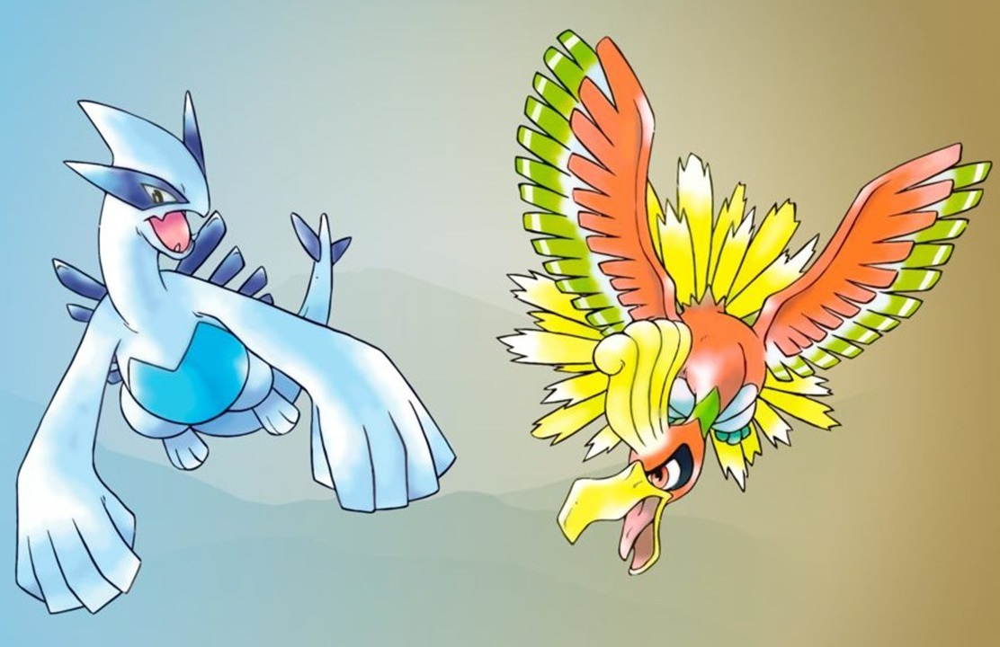

Pokémon Oro y Plata - La Evolución de una Saga
Fecha de lanzamiento: 21 de noviembre de 1999 (Japón), 2000 (EE.UU. y Europa)
Plataforma: Game Boy Color
Desarrollador: Game Freak
Introducción
*Pokémon Oro y Plata* expandieron y mejoraron la fórmula de los juegos originales, introduciendo una nueva región, más Pokémon y características innovadoras que redefinieron la franquicia.
Jugabilidad
El juego mantiene la mecánica de rol por turnos, pero añade una nueva región (Johto), la posibilidad de viajar a Kanto, un reloj interno con eventos en tiempo real y la crianza Pokémon, lo que añade profundidad a la experiencia.
Gráficos y Sonido
Gracias al Game Boy Color, los gráficos mejoraron con más detalles y colores vibrantes. La banda sonora de Junichi Masuda mantiene la esencia nostálgica y épica de la serie.
Historia
El jugador emprende un viaje para convertirse en el campeón de la Liga Pokémon en la nueva región de Johto, enfrentándose nuevamente a un equipo villano, el resurgente Team Rocket, y descubriendo Pokémon legendarios como Ho-Oh y Lugia.
Conclusión
*Pokémon Oro y Plata* son considerados por muchos como las mejores entregas de la serie, gracias a sus mejoras en jugabilidad y la enorme cantidad de contenido disponible.